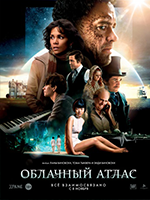

«Межзвёздный» — научно-фантастический фильм, снятый Кристофером Ноланом по сценарию, написанному в соавторстве с Джонатаном Ноланом. Фильм повествует о путешествиях группы исследователей, которые используют недавно обнаруженный пространственно-временной тоннель, чтобы обойти ограничения полёта человека в космосе и покорить огромные расстояния на межзвёздном корабле.
«Межзвёздный» — научно-фантастический фильм, снятый Кристофером Ноланом по сценарию, написанному в соавторстве с Джонатаном Ноланом. Фильм повествует о путешествиях группы исследователей, которые используют недавно обнаруженный пространственно-временной тоннель, чтобы обойти ограничения полёта человека в космосе и покорить огромные расстояния на межзвёздном корабле.
 Когда засуха приводит человечество к продовольственному кризису, коллектив исследователей и учёных отправляется сквозь червоточину (которая предположительно соединяет области пространства-времени через большое расстояние) в путешествие, чтобы превзойти прежние ограничения для космических путешествий человека и переселить человечество на другую планету.
Когда засуха приводит человечество к продовольственному кризису, коллектив исследователей и учёных отправляется сквозь червоточину (которая предположительно соединяет области пространства-времени через большое расстояние) в путешествие, чтобы превзойти прежние ограничения для космических путешествий человека и переселить человечество на другую планету.
 Фильм вышел на экраны США 31 марта 1999 года и положил начало трилогии фильмов, а также комиксам, компьютерным играм и аниме по мотивам. Фильм изображает будущее, в котором реальность, существующая для большинства людей, есть в действительности симуляция типа «мозг в колбе», созданная разумными машинами, чтобы подчинить и усмирить человеческое население...
Фильм вышел на экраны США 31 марта 1999 года и положил начало трилогии фильмов, а также комиксам, компьютерным играм и аниме по мотивам. Фильм изображает будущее, в котором реальность, существующая для большинства людей, есть в действительности симуляция типа «мозг в колбе», созданная разумными машинами, чтобы подчинить и усмирить человеческое население...

«Облачный атлас» - это кино о круговороте жизни, любви, искусства и свободы. Последняя живет в мелодиях, во взглядах, в убеждениях и решениях.